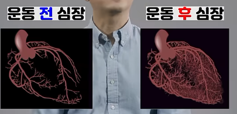

순환기내과와 스포츠 의학 연구진들이 공개한 '운동 전 심장 vs 규칙적인 유산소 운동 후 심장'의 3D 조영 혈관 사진은 보는 사람을 압도합니다. 운동 전에는 굵은 관상동맥 줄기 몇 가닥만 성기게 보이던 심장이, 수개월의 꾸준한 유산소 러닝 후에는 마치 빽빽한 아마존 열대우림처럼 수억 개의 미세혈관으로 뒤덮이기 때문입니다. 이 경이로운 현상의 정체는 바로 '심근 모세혈관 신생(Capillary Angiogenesis)'과 '관상동맥 측부순환(Coronary Collateral Circulation)'입니다. 왜 러너는 주혈관이 막혀도 돌연사하지 않고 살아남는지, 그 생리학적 메커니즘을 밝혀냅니다.

[실제 혈관 조영 비교] 좌측: 주로 굵은 주혈관만 유지되는 비운동인 심장 vs 우측: 미세 모세혈관망이 숲을 이룬 유산소 러너의 심장
자료: 미국심장협회(AHA) 및 운동생리학 순환기 조영 연구 데이터 시각화1. 사진 속 빽빽한 혈관망의 정체: '천연 바이패스' 곁순환
인간의 심장은 쉬지 않고 하루 10만 번 이상 수축하며 전신에 피를 보냅니다. 심장 자체도 엄청난 산소와 영양분을 소모하기 때문에 심장 외벽을 둘러싼 **3가닥의 관상동맥(좌전하행지, 좌회선지, 우관상동맥)**을 통해 전용 혈액을 공급받습니다.
운동을 하지 않는 일반인의 심장은 이 굵은 3대 간선도로에만 혈류 공급을 전적으로 의존합니다. 만약 이 중 하나라도 혈전이나 죽상경화반(플라크)으로 막히면, 그 도로 아래의 심근 세포들은 몇 분 만에 괴사하며 **급성 심근경색(Myocardial Infarction)**과 심장마비로 이어집니다.
하지만 꾸준히 달린 러너의 심장은 완전히 다른 구조로 진화합니다. 굵은 간선도로 사이에 무수히 많은 샛길과 골목길, 즉 **'관상동맥 측부순환(Coronary Collateral Vessels)'**과 **'미세 모세혈관망(Capillary Bed)'**이 촘촘하게 연결됩니다. 의학계에서는 이를 **"몸이 스스로 심장에 심어놓은 천연 관상동맥 우회 수술(Natural Bypass Graft)"**이라고 부릅니다.
💡 왜 러너는 혈관이 막혀도 기적적으로 걸어서 응급실에 갈까?
미국 심장학 저널(JACC) 및 하버드 의대 연구에 따르면, 장거리 마라토너가 관상동맥 90% 협착이 발생해도 가슴 통증을 느끼지 못하거나 생명을 건지는 사례가 종종 보고됩니다. 주혈관이 좁아지더라도 수천 가닥의 곁가지 모세혈관망이 반대편 정상 혈관에서 피를 끌어와 우회로(Collateral Blood Flow) 역할을 완벽히 대행해주기 때문입니다.
2. 심장에 새로운 혈관 숲을 심는 3대 과학적 방아쇠
어떻게 달리기라는 단순한 행위가 심근 내피세포를 증식시키고 혈관을 새로 자라나게 만들까요? 운동생리학은 3가지 기전을 지목합니다.
① 물리적 방아쇠: 혈류 전단응력 (Fluid Shear Stress)
러닝 중 심박수가 130~160bpm으로 치솟고 심박출량이 평소의 4~6배로 치솟으면, 심장 관상동맥 벽을 스쳐 지나가는 혈액의 속도와 마찰력이 급증합니다. 이 물리적 마찰력을 '전단응력(Shear Stress)'이라고 합니다. 혈관 내벽에 줄지어 있는 혈관내피세포는 이 압력을 감지하자마자 비상벨을 울리며 기존 혈관의 출아(Sprouting, 가지치기)를 유도합니다.
② 화학적 방아쇠: VEGF(혈관내피성장인자)의 폭발적 분비
달릴 때 심근은 엄청난 양의 산소를 소비합니다. 이때 심장 세포 내에서 산소 분압이 일시적으로 낮아지는 '생리적 저산소 자극(Physiological Hypoxia)'이 발생합니다. 이 신호는 HIF-1α(저산소 유도인자)를 활성화하고, 뒤이어 혈관 생성의 마스터 단백질인 VEGF (Vascular Endothelial Growth Factor)와 bFGF(섬유아세포성장인자)를 대량 분비시킵니다. 마치 메마른 화분에 비료를 준 것처럼, VEGF 신호를 받은 혈관 세포들은 서로 손을 맞잡고 새로운 모세혈관 파이프를 뻗어나갑니다.
③ NO(산화질소)에 의한 직경 확대 (Arteriogenesis)
단순히 가느다란 모세혈관만 늘어나는 것이 아닙니다. 기존에 닫혀 있던 미세 곁순환 혈관들이 내피세포 산화질소(NO)의 분비로 직경이 2~10배까지 굵어지며 단단한 동맥 혈관으로 구조적 리모델링(동맥신생, Arteriogenesis)을 이룹니다.
| 비교 항목 | 운동 전 (좌식 생활) | 운동 후 (규칙적 유산소 러너) |
|---|---|---|
| 모세혈관-근섬유 비율 (C/F Ratio) | 1개 근섬유당 1.0~1.3개 | 1개 근섬유당 1.8~2.5개 (최대 100% 증가) |
| 관상동맥 측부순환 (우회로) | 비활성화 및 퇴화 (단일 경로) | 촘촘한 그물망 네트워크 (천연 바이패스) |
| 산소 확산 거리 (Diffusion Distance) | 길다 (심근 중심부 산소 공급 지연) | 극도로 짧음 (심근 구석구석 즉시 도달) |
| 심혈관 돌연사 저항력 | 취약 (주혈관 폐색 시 급성 괴사) | 극도로 강력 (우회 혈류로 심근 보존) |
3. 언제부터 이 모세혈관 숲이 자라날까? (타임라인)
많은 분들이 묻습니다. "몇 년을 마라톤 뛰어야 저런 혈관망이 생기나요?"
놀랍게도 인체 혈관의 가소성(Plasticity)은 생각보다 훨씬 빠릅니다.
- 달리기 2~4주 차: 혈류 전단응력으로 인해 내피세포 산화질소(NO) 합성이 증가하며 기존에 잠자던 미세혈관들이 확장(Recruitment)되어 혈류량이 30% 증가합니다.
- 달리기 6~12주 차: VEGF 단백질의 지속적 발현으로 모세혈관 출아(Sprouting)가 본격화됩니다. 근섬유 1가닥당 둘러싸는 모세혈관 수가 눈에 띄게 늘어나며 심장의 산소 전달 능력이 급상승합니다. "숨이 덜 찬다"는 느낌이 바로 이 시점입니다.
- 달리기 6개월~1년 이상: 새로 생긴 미세혈관들이 영구적인 혈관 평활근 옷을 입으며 안정적인 '동맥 혈관(Collateral Artery)'으로 굳어집니다. 사진 속의 빽빽한 천연 바이패스 망이 영구적으로 자리 잡는 시기입니다.
4. 어떤 속도로 뛰어야 심장에 혈관이 가장 많이 생길까?
혈관 신생을 유도하는 최적의 운동은 **'토할 때까지 뛰는 전력 질주'가 아닙니다.**
스포츠 생리학 연구에 따르면 모세혈관 신생(Angiogenesis)은 '지속적인 혈류 전단응력의 총 노출 시간'에 비례합니다.
🏃 최적의 혈관 생성 레시피: 주 3~4회, 40~60분의 Zone 2 조깅
숨이 차서 헐떡이지 않고 옆 사람과 편안하게 대화할 수 있는 속도(최대 심박수의 65~75%)로 40분 이상 꾸준히 달릴 때, 심근은 과도한 젖산 피로 없이 수만 번의 부드러운 전단응력 마사지를 받습니다. 이 Zone 2 유산소 자극이 VEGF와 산화질소를 가장 안전하고 지속적으로 뿜어내어 심장을 빽빽한 혈관 숲으로 채우는 최상의 처방전입니다.
🩺 내 심장을 숲으로 바꿀 맞춤 심박수 구간 계산기
내 안정시 심박수와 나이를 바탕으로, 심근 모세혈관 신생을 극대화하는 가장 안전하고 효과적인 Zone 2 유산소 심박 범위를 직접 확인해보세요.
📊 카르보넨 심박수 Zone 계산기 실행하기 →- Prior, B. M., Yang, H. T., & Terjung, R. L. (2004). What makes vessels grow with exercise training? Journal of Applied Physiology, 97(3), 1119-1128.
- Seiler, C. (2010). The human coronary collateral circulation. European Journal of Clinical Investigation, 40(5), 465-476.
- Laughlin, M. H., & Roseguini, C. (2008). Mechanisms for exercise training-induced increases in skeletal and cardiac muscle capillary number: role of vascular endothelial growth factor. The Journal of Physiology, 586(16), 3999-4010.
- Schaper, W. (2009). Collateral circulation: past and present. Basic Research in Cardiology, 104(1), 5-21.